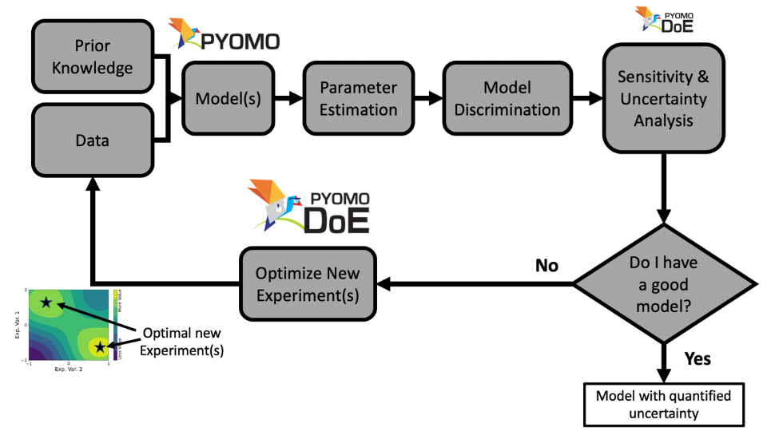

Optimizing Experiments with Pyomo.DoE#
Welcome to the interaction tutorial workshop for parameter estimation and model-based design of experiments in the Pyomo ecosystem!

These materials were created by Prof. Alexander Dowling at the University of Notre Dame. Special thanks to Prof. Jeff Kantor, Maddie Watson, Molly Dougher, and Hailey Lynch for assistance with the TCLab models and activities. Pyomo.DoE was developed by Jialu Wang and Alexander Dowling with assistance from John Siirola, Bethany Nicholson, Miranda Mundt, Hailey Lynch, and Dan Laky. Pyomo.DoE was refactored over the summer of 2024 by Dan Laky and Prof. Alexander Dowling, who both also updated the workshop materials to coincide with the refactored versions of both Pyomo.DoE and parmest.
PSE+ Stakeholder Summit 2024 Workshop Schedule#
Thank you for joining the workshop at the PSE+ Stakeholder Summit in Pittsburgh, Pennsylvania on September 19, 2024.
Time |
Topic |
|---|---|
1:00 pm |
Welcome and Overview |
1:10 pm |
Modeling and Optimization in Pyomo |
1:30 pm |
Parameter Estimation |
1:50 pm |
Break |
2:00 pm |
Optimal Experiment Design |
2:30 pm |
Adjourn |
What will I learn in this workshop?#
Digital twins refer to a new perspective on predictive modeling, where a mathematical model (often grounded in engineering science fundamentals) is continuously updated with as new data from the corresponding physical system become available. Thus a digital twin mimics the behaviors of its corresponding physical system. Often digital twins are developed and deployed for a specific purpose, e.g., optimizing maintain schedules, process monitoring for improved safety, optimal control of complex systems.
In this workshop, we will learn how to develop digital twin models in the open-source Pyomo ecosystem. Specifically, we will learn how to use two Pyomo-based toolkits:
ParmEstfor parameter estimation and uncertainty quantificationPyomo.DoEfor model-based design of experiments
What do I need to complete the tutorial?#
This tutorial assumes the audience is familiar with basic Python programming. (New to Python? Check out this and similar online resources.) The tutorial is designed to run in Google Colab. The tclab_pyomo.py file contains the Pyomo model for our motivating system as well as utilities to install software on Colab.
Alternatively, pariticipants can run the tutorial locally on their computer. Use the following command to create a new conda environment:
conda create -n summer2024 -c conda-forge -c IDAES-PSE python=3.10 idaes-pse pandas numpy matplotlib scipy ipykernel
Then install the optimization solvers, including Ipopt with HSL linear algebra and k_aug:
idaes get-extensions
Note: k_aug is not distributed for macOS users with an Intel processor. Instead, you will either need to compile yourself or skip a few sections of the tutorial. k_aug is an optional dependency for Pyomo.DoE.
Next, download the files for this tutorial:
git clone git@github.com:dowlinglab/pyomo-doe.git
How do I learn more about Pyomo.DoE?#
The Pyomo.DoE documentation is a great information and a different set of examples. Also see our tutorial notebook for the reaction kinetics example.
If you use Pyomo.DoE, please cite our paper:
Pyomo.DoE paper
Wang and Dowling, 2022. Pyomo.DoE: An open-source package for model-based design of experiments in Python. AIChE Journal, 68(12), e17813. https://doi.org/10.1002/aic.17813
New to Pyomo? Check out these great resources: